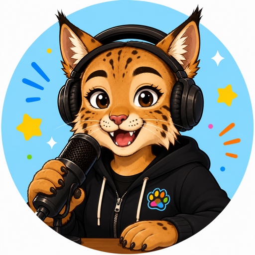

The wildest animal podcast for kids on the planet!

Hi, I'm Elizabeth! I LOVE animals so much that I started my very own podcast to share the coolest, weirdest, and most jaw-dropping animal facts with you. So grab your explorer hat and let's go on a wild adventure together — because animals aren't boring… they're AWESOME!
Paws The Time is the wildest animal podcast made just for kids! In every episode I pick one amazing animal and dig up the most incredible facts about it — how fast it runs, what it eats, where it lives, and the super-secret tricks that make it special.
From roaring tigers to sneaky octopuses, every show is packed with adventure, giggles, and "WHOA, I didn't know that!" moments. You can listen in the car, while you're munching breakfast, or all snuggled up before bed.
New animals, new adventures, and tons of fun — all you have to do is press play and let your imagination run wild!
Animals can do things humans only dream about. They fly across whole oceans, see in the dark, breathe underwater, and run faster than cars! Every single one has its own superpower, and learning about them helps us take better care of our amazing planet. That's why I always say — animals aren't boring… they're AWESOME!